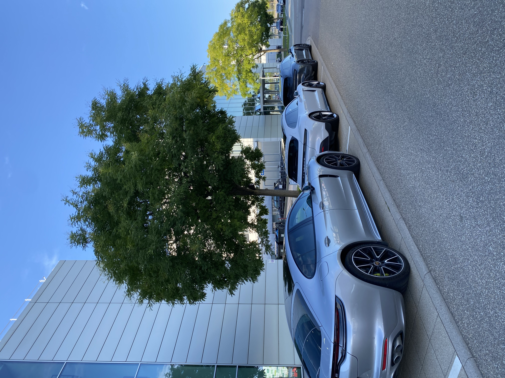
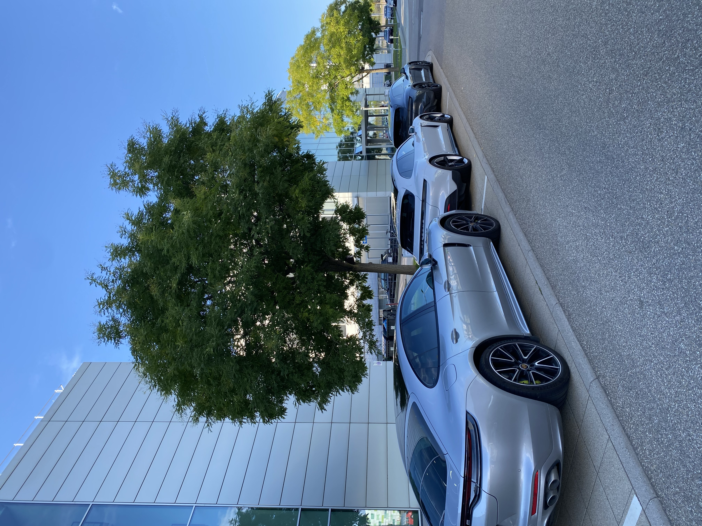

Internships
Short placements and learning experiences
 

Supply-Chain Management Intern, Project Taycan
- Developed a tracking program for vehicle components, improving visibility and cross-team coordination
- Coordinated interactions between R&D, engineers and supply chain teams to ensure smooth operations
- Led knowledge-sharing meetings, advised on supplier negotiations, and contributed to strategic discussions
Perfect Portfolio Management Intern
- Coordinated the integration of the 2024 detergent portfolio across multiple countries (JPN, EMEA, MEX)
- Analysed data, conducted market analysis, and facilitated strategic discussions with top management
- Led meetings, developed the department "Sales Story", and acted as the main contact for consultants